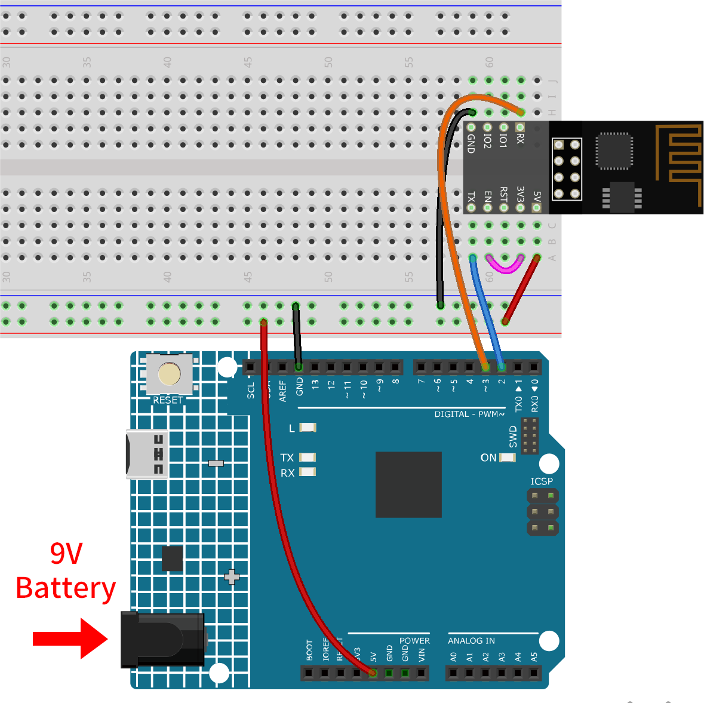
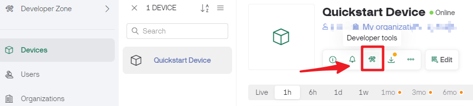
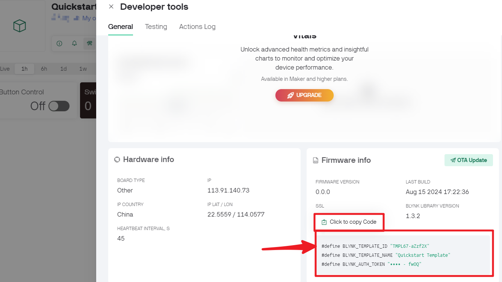
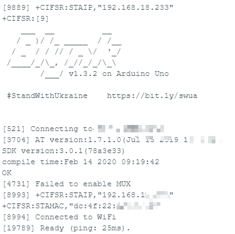
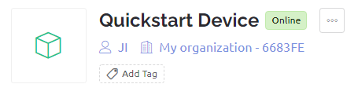

Note
Hello, welcome to the SunFounder Raspberry Pi & Arduino & ESP32 Enthusiasts Community on Facebook! Dive deeper into Raspberry Pi, Arduino, and ESP32 with fellow enthusiasts.
Why Join?
Expert Support: Solve post-sale issues and technical challenges with help from our community and team.
Learn & Share: Exchange tips and tutorials to enhance your skills.
Exclusive Previews: Get early access to new product announcements and sneak peeks.
Special Discounts: Enjoy exclusive discounts on our newest products.
Festive Promotions and Giveaways: Take part in giveaways and holiday promotions.
👉 Ready to explore and create with us? Click [here] and join today!
1.3 Connecting the R4 board to Blynk
Reconnect the ESP8266 module and R4 board, here the software serial is used, so TX and RX are connected to pins 2 and 3 of R4 board respectively.
Note
The ESP8266 module requires a high current to provide a stable operating environment, so make sure the 9V battery is plugged in.

Click the devices page and you will see the new device you just created. Then, click developer tools.

And you will see
TEMPLATE_ID,DEVICE_NAMEandAUTH_TOKENon the Firmware info, and you will need to copy them later.
Open the
00-Blynk_quick_start.inofile under the path ofultimate-sensor-kit\code\iot_project_esp01\wifi\00-Blynk_quick_start. Or copy this code into Arduino IDE.Replace the following three lines of code that you can copy from your account’s Firmware info page. These three lines of code will allow your R4 board to find your blynk account.
#define BLYNK_TEMPLATE_ID "TMPLxxxxxx" #define BLYNK_DEVICE_NAME "Device" #define BLYNK_AUTH_TOKEN "YourAuthToken"

Fill in the
ssidandpasswordof the WiFi you are using.char ssid[] = "ssid"; char pass[] = "password";
Upload the code to the R4 board, then open the serial monitor and set the baud rate to 115200. when the R4 board communicates with Blynk successfully, the serial monitor will show the
readycharacter.
Note
If the message
ESP is not respondingappears when you connect, please follow these steps.Make sure the 9V battery is plugged in.
Reset the ESP8266 module by connecting the pin RST to GND for 1 second, then unplug it.
Press the reset button on the R4 board.
Sometimes, you may need to repeat the above operation 3-5 times, please be patient.
The status of Blynk will change from offline to online.
